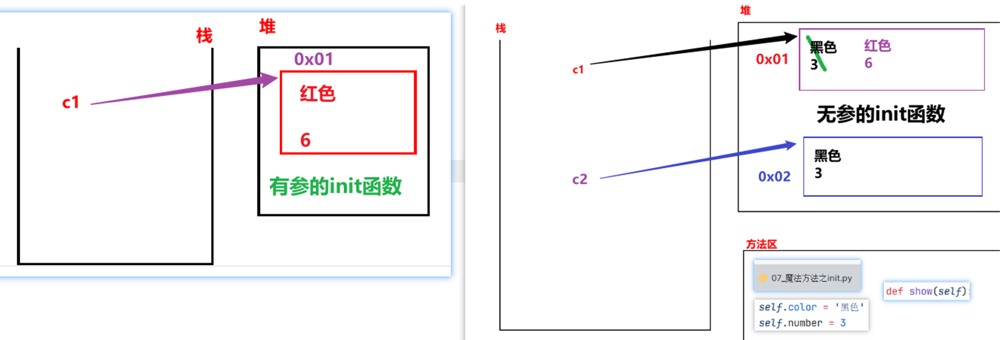
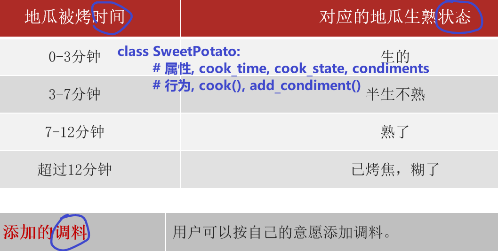

面向对象和面向过程
- 编程思想
就是人们利用计算机来解决问题的思维.
-
分类
-
面向过程
它是一种编程思想, 强调的是以 步骤(过程) 为基础完成各种操作.
-
面向对象
参考思路: 概述, 思想特点, 举例, 总结
它是一种编程思想, 强调的是以 对象 为基础完成各种操作, 它是基于 面向过程的. 说到面向对象, 不得不提的就是它的三大思想特点:
- 更符合人们的思考习惯.
- 把复杂的事情简单化.
- 把人们(程序员)从执行者变成指挥者.
举例: 越符合当时的场景越好, 例如: 买电脑, 洗衣服...
总结: 万物接对象.
面向对象特征介绍
-
三大特征
-
封装
- 继承
-
多态
-
封装简介
-
概述
就是隐藏对象的属性和实现细节, 仅对外提供公共的访问方式.
-
举例
- 电脑, 手机, 函数, 类 = 属性 + 行为
-
好处
提高代码的安全性. (私有化)
提高代码的复用性. (函数)
-
继承
-
概述
子类继承父类的成员, 例如: 属性, 行为等.
大白话: 子承父业. -
好处
提高代码的复用性.
-
多态
-
概述
大白话： 同一个事物在不同时刻表现出来的不同状态, 形态.
专业版： 同1个函数， 接收不同的对象， 有不同的效果。
入门案例_汽车类
Python
""" 案例: 演示定义汽车类 及 使用类中的成员. 面向对象核心概念: 类: 抽象的概念, 看不见, 摸不着, 是 属性(名词) 和 行为(动词)的集合. 对象: 类的具体体现, 实现. 属性(名词): 用来描述事物的外在特征的, 例如: 姓名, 年龄... 格式: 和以前定义变量一样. 行为(动词): 用来描述事物能够做什么的, 例如: 吃, 喝... 格式: 和以前定义函数一样. 定义类的格式: class 类名: # 属性 # 行为 如何访问类中的成员? step1: 创建该类的对象. 对象名 = 类名() step2: 通过 对象名. 的方式调用. 对象性.属性名 对象名.行为名() 需求: 定义汽车类, 有跑的行为. """ # 1.定义汽车类. class Car: # 类名遵循 大驼峰命名法. # 属性 # 行为 def run(self): print('汽车会跑!...') # 2.创建汽车类的对象. c1 = Car() # 3. 调用Car类的run()函数, 简写版: 调用Car#run() c1.run()
self关键字介绍
- 案例1
Python
""" 案例: self关键字介绍. self介绍: 概述: 它是Python内置的关键字, 用于表示 本类当前对象的引用. 作用: 1个类是可以有多个对象的, 这多个对象都可以通过 对象名. 的方式访问类中的行为(函数) 函数默认有self属性, 函数通过self来区分到底是哪个对象调用的该函数. 大白话: 谁调用函数, self就代表哪个对象. """ # 需求: 定义汽车类, 创建多个该类的对象, 看看打印结果. # 1. 定义汽车类. class Car: # 属性 # 行为, 跑 def run(self): print('汽车会跑!...') print(f'我是run函数, self的值是: {self}') # 2.创建汽车类的对象. c1 = Car() print(f'c1对象: {c1}') # 通过 对象名. 的形式, 调用Car#run() c1.run() print('-' * 34) # 3.继续创建汽车类的对象. c2 = Car() print(f'c2对象: {c2}') # 通过 对象名. 的形式, 调用Car#run() c2.run()
- 案例2
Python
""" 案例: 演示通过 self关键字实现 在类内访问其它函数.' self关键字: 概述: 代表本类当前对象的引用, 谁(哪个对象)调用, self就代表谁. 作用: 用于实现函数 区分 不同对象的. 总结: 1.在 类外 访问类中的行为, 需要通过 对象名. 的方式访问. 2.在 类内 访问类中的行为，需要通过 self. 的方式访问。 """ # 需求: 定义汽车类, 类内有run()函数, 并在work()中调用run()函数, 创建该类对象, 调用上述的函数. # 1. 定义汽车类. class Car: # 属性(名词) # 行为(动词) # 1.1 run()函数 def run(self): print(f'{self} 汽车在跑...') # 1.2 work()函数, 在其内部调用run() def work(self): print(f'我是work函数, 我的self值: {self}') self.run() # self = 本类当前对象的引用. # 2.在类外访问Car类的行为(函数) c1 = Car() print(f'c1对象: {c1}') c1.run() # c1在跑 print('-' * 34) c1.work() # c1在work, c1在跑 print('=' * 34) # 分割线 # 3.再次创建对象. c2 = Car() print(f'c2对象: {c2}') c2.run() print('-' * 34) c2.work()
入门案例_手机类
Python
""" 案例: 定义手机类, 能开机, 关机, 拍照. 回顾: 定义类的格式 class 类名: # 属性 # 行为 访问 类中成员 的格式: 类外: 对象名. 的方式 类内: self. 的方式 """ # 1.定义手机类. class Phone: # 属性 # 行为 # 1.1 开机. def open(self): print(f'{self} 手机开机了') # 1.2 关机. def close(self): print(f'{self} 手机关机了') # 1.3 拍照. def take_photo(self): print(f'{self} 手机拍照了') # 2. 创建手机类对象, 访问其成员. p1 = Phone() print(f'p1对象: {p1}') p1.open() p1.take_photo() p1.close() print('-' * 34) # 3.继续创建手机类对象, 访问其成员. p2 = Phone() print(f'p2对象: {p2}') p2.open() p2.take_photo() p2.close()
类外_获取和设置对象的属性

Python
""" 案例: 演示在类外 如何获取 和 设置 对象的属性. 类外, 设置对象的属性, 格式如下: 对象名.属性名 = 属性值 特点: 该属性独属于这个对象, 即: 该类的其它对象没有这个属性. 类外, 获取对象的属性, 格式如下: 对象名.属性名 """ # 需求: 创建汽车类, 设置为红色, 4个轮胎, 有跑的功能. # 1.创建汽车类. class Car: # 属性(名词), 事物具有哪些特征 -> 变量. # 行为(动词), 事物能够做什么 -> 函数. def run(self): print('汽车会跑...') # pass # 2.创建该类的对象 -> 这个是 类外 的位置. c1 = Car() c1.run() # 汽车会跑... # 细节1: 给c1对象设置属性. c1.color = '红色' c1.number = 4 # 细节2: 打印c1对象的属性值. print(f'颜色: {c1.color}, 轮胎数: {c1.number}') print('-' * 34) # 3.继续创建该类的对象. c2 = Car() c2.run() # 细节3: 尝试调用c2对象的 color和number属性 # print(f'颜色: {c2.color}, 轮胎数: {c2.number}')
类内_获取对象的属性
Python
""" 案例: 演示类内如何获取对象的属性. 回顾(总结): 1. 类外访问类中的成员, 可以通过 对象名. 的方式. 2. 类内访问类中的成员, 可以通过 self. 的方式. 3. 类外通过 对象名.属性名 = 属性值 的方式 设置属性, 只有当前对象有. 细节: 类内如何设置属性, 要结合 魔法方法 __init__() 来实现, 稍后讲. """ # 1. 定义汽车类, 创建该类对象, 赋予颜色 和 轮胎数两个属性, 并在类内访问该属性. class Car: # 属性 # 行为 # 1.1 跑 def run(self): print('汽车会跑') # 1.2 定义函数show(), 实现 在类内访问 汽车对象的属性. def show(self): print(f'我是show函数, 对象的颜色: {self.color}, 轮胎数: {self.number}') # 2.创建汽车类的对象 c1 = Car() # 3. 给其(c1)赋予 属性 -> 类外设置属性. c1.color = '红色' c1.number = 4 # 4. 类外访问属性. print(f"颜色: {c1.color}, 轮胎数: {c1.number}") # 5. 类外访问行为(类中的函数) c1.run() c1.show() print('-' * 34) # 6. 继续创建汽车类对象, 尝试分别调用run(), show()函数. c2 = Car() c2.run() # c2.show() # 报错.
魔法方法之init方法
- 图解

- 案例1: 无参数版
Python
""" 案例: 演示 init魔法方法的 用法. 魔法方法: 概述/特点: Python内置的函数, 在满足特定的场景下, 会被 自动调用. 常用的魔法方法: __init__() 在(每次)创建对象的时候, 会自动触发该类的 __init__()函数. __str__() __del__() """ # 需求: 定义汽车类, 默认属性为: color='黑色', number=3 # 1. 定义汽车类. class Car: # 1.1 在魔法方法 init()中, 初始化: 属性. def __init__(self): print('我是 无参 init 魔法方法') # 1.2 在init魔法方法中, 初始化属性, 则: 该类所有的对象, 一创建, 就有这些属性了. self.color = '黑色' self.number = 3 # 1.3 定义show()函数, 打印该类对象的 各个属性值. def show(self): print(f'颜色: {self.color}, 轮胎数: {self.number}') # 2.创建汽车类对象. c1 = Car() # 会自动调用 __init__()函数. # 修改c1的属性值 c1.color = '红色' c1.number = 6 # 打印c1对象的属性值. print(c1.color, c1.number) c1.show() print('-' * 34) c2 = Car() c2.show()
- 案例2: 有参数版
Python
""" 案例: 演示魔法方法之 init 有参版, 实际开发常用. 回顾: __init__()魔法方法, 在创建对象的时候, 会被自动调用, 一般用于给该类对象 的属性进行初始化. 大白话举例: 无参版 init -> 默认上的有底色, 你需要重新涂色(覆盖底色) 有参版 init -> 默认没有涂色的石膏娃娃, 我们根据喜好自由涂色即可. """ # 需求: 创建汽车类, 不给默认值, 由汽车对象 外部各自赋值即可. # 1. 定义汽车类. class Car: # 2.有参的 __init__()函数, 参数值由: 外部对象自行赋值. def __init__(self, color, number): """ 该魔法方法用于给 汽车类 对象的属性 赋值. :param color: 车的颜色 :param number: 车的轮胎数 """ self.color = color self.number = number # 定义show()函数, 打印该类对象的 各个属性值. def show(self): print(f'颜色: {self.color}, 轮胎数: {self.number}') # 3. 创建汽车类对象. # c1 = Car() # 报错, 因为默认调用了init()函数, 但是该函数有参数, 则必须传参. c1 = Car('红色', 6) c1.show() print('-' * 23) c2 = Car('绿色', 4) c2.show() c3 = Car()
魔法方法之str方法
Python
""" 案例: 演示 str魔法方法的 用法. 魔法方法: 概述/特点: Python内置的函数, 在满足特定的场景下, 会被 自动调用. 常用的魔法方法: __init__() 在(每次)创建对象的时候, 会自动触发该类的 __init__()函数. __str__() 当用print()函数 打印对象的时候, 会自动调用该对象(所在类)的 str魔法方法. 该魔法方法默认打印的是对象的地址值, 无意义, 一般都会重写, 改为打印 对象的各个属性值. __del__() """ # 1. 定义汽车类. class Car: # 2.有参的 __init__()函数, 参数值由: 外部对象自行赋值. def __init__(self, color, number): """ 该魔法方法用于给 汽车类 对象的属性 赋值. :param color: 车的颜色 :param number: 车的轮胎数 """ self.color = color self.number = number # 魔法方法str(), 默认打印地址值, 无意义, 一般会重写, 改为打印对象的各个属性值. def __str__(self): return f'颜色: {self.color}, 轮胎数: {self.number}' # return f'{self.color}, {self.number}' # 3.创建该类的对象. c1 = Car('绿色', 4) print(c1) # 输出语句打印对象, 默认调用了该对象 所在类的 str魔法方法. print('-' * 23) c2 = Car('红色', 6) print(c2)
魔法方法之del方法
Python
""" 案例: 演示 str魔法方法的 用法. 魔法方法: 概述/特点: Python内置的函数, 在满足特定的场景下, 会被 自动调用. 常用的魔法方法: __init__() 在(每次)创建对象的时候, 会自动触发该类的 __init__()函数. __str__() 当用print()函数 打印对象的时候, 会自动调用该对象(所在类)的 str魔法方法. 该魔法方法默认打印的是对象的地址值, 无意义, 一般都会重写, 改为打印 对象的各个属性值. __del__() 当.py文件执行结束, 或者 手动 del 释放对象资源, 会自动调用该函数. """ # 1. 定义汽车类, 属性: 品牌. 行为:run() 通过del魔法方法删除该类的对象, 看看效果. class Car: # 2. 在魔法方法init中, 完成: 属性的初始化. def __init__(self, brand): self.brand = brand # 3.重写 str魔法方法, 打印对象的属性值. def __str__(self): return f'品牌: {self.brand}' # 4. 重写 del魔法方法, 删除对象时给出提示. def __del__(self): print(f'{self} 对象被删除了!') # 5. 创建汽车类对象. c1 = Car('小米 Su7 Ultra') print(c1) # 6. 手动访问 brand 属性. print(c1.brand) print('-' * 23) # 7.手动删除c1对象, 然后尝试 打印该对象 或者 访问对象的属性. # del c1 # print(c1) # 报错. print('程序结束!')
减肥案例
Python
""" 案例: 减肥案例. 需求: 例如，小明同学当前体重是100kg。每当他跑步一次时，则会减少0.5kg；每当他大吃大喝一次时，则会增加2kg。请试着采用面向对象方式完成案例。 分析: 类名: Student 对象名: xm 属性(名词): 当前体重, current_weight 行为(动词) 跑步, 吃饭 """ # 1.定义学生类. class Student: # 2.在魔法方法init中, 完成: 对象的属性的初始化. def __init__(self): self.current_weight = 100 # 3.每当他跑步一次时，则会减少0.5kg def run(self): print('疯狂跑步...') self.current_weight -= 0.5 # 体重减小. # 4.大吃大喝. def eat(self): print('大吃大喝一顿...') self.current_weight += 2 # 5.重写魔法方法str, 打印属性值, 即: 当前体重. def __str__(self): # return '当前体重: %s' % self.current_weight return f'当前体重: {self.current_weight} kg!' # 6. 测试. if __name__ == '__main__': # 6.1 创建学生对象. xm = Student() # 6.2 跑步 xm.run() xm.run() # 6.3 吃喝 xm.eat() # 6.4 当前体重. print(xm)
烤地瓜案例

Python
""" 案例: 烤地瓜案例. 需求: 1. 定义地瓜类 -> SweetPotato 2. 属性: 被烤时间cook_time, 烘焙状态 cook_state, 调料 condiments 3. 行为: 烘烤cook(), 添加调料 add_condiment() 4. 魔法方法: init() -> 初始化属性, str() -> 打印地瓜信息. 5. 规则: 烘烤时间 地瓜状态 [0, 3) 生的 包左不包右, 前闭后开. [3, 7) 半生不熟 [7, 12) 熟了 [12, ∞] 糊了 """ # 1. 定义地瓜类 -> SweetPotato class SweetPotato: # 2. 在魔法方法__init__()中, 初始化地瓜的属性. def __init__(self): self.cook_time = 0 self.cook_state = '生的' self.condiments = [] # 3.具体的烘烤动作. def cook(self, time): # 3.1 根据烘烤时间, 修改地瓜的烘烤状态. if time < 0: print('无效值!') else: # 3.2 修改地瓜的 烘烤时间. self.cook_time += time # 3.3 根据烘烤时间, 修改地瓜的烘烤状态. if 0 <= self.cook_time < 3: self.cook_state = '生的' elif 3 <= self.cook_time < 7: self.cook_state = '半生不熟' elif 7 <= self.cook_time < 12: self.cook_state = '熟了' else: self.cook_state = '糊了' # 4. 添加调料 add_condiment() def add_condiment(self, condiment): self.condiments.append(condiment) # 5. 重写str()方法, 打印地瓜信息. def __str__(self): return f'烘烤时间: {self.cook_time}, 地瓜状态: {self.cook_state}, 调料: {self.condiments}' # 6.测试. if __name__ == '__main__': # 7. 创建地瓜对象 dg = SweetPotato() # 8. 具体的烘烤动作. # dg.cook(-3) dg.cook(3) dg.cook(5) dg.cook(7) # 9. 添加调料 dg.add_condiment('芥末/辣根') dg.add_condiment('折耳根') dg.add_condiment('豆汁') dg.add_condiment('鲱鱼罐头') # 10. 打印地瓜状态. print(dg)
创建类的格式
Python
""" 案例: 创建类的格式介绍. 格式1: class 类名: pass 格式2: class 类名(): pass 格式3: # class 类名(父类名): class 类名(object): pass """ # 需求: 定义老师类 # class Teacher: # class Teacher(): class Teacher(object): # object是所有类的父类, Python中所有的类都直接或者间接继承自object类. pass t1 = Teacher() print(t1)
继承入门
Python
""" 案例: 继承入门. 继承介绍: 概述: 大白话: 子承父业. 专业版: 子类可以继承父类的属性 和 行为. 写法: class 子类名(父类名): pass 例如: class A(B): pass 叫法: A: 子类, 派生类 B: 父类, 基类, 超类 好处: 提高代码的复用性 弊端: 耦合性增强了, 父类不好的内容, 子类想没有都不行. 扩展: 开发原则 高内聚, 低耦合. 内聚: 指的是类自己独立处理问题的能力. 耦合: 指的是类与类之间的关系. 大白话解释: 自己能搞定的事儿, 就不要麻烦别人. """ # 需求: 定义父类(男, 散步), 定义子类, 继承父类. # 1. 定义父类. class Father(object): def __init__(self): self.gender = '男' def walk(self): print('饭后走一走, 活到九十九!') # def smoking(self): # print('抽烟有害, 健康!') # 2. 定义子类. class Son(Father): pass # 3.测试子类的功能. s = Son() print(f'性别: {s.gender}') # 子类从父类继承过来 属性. s.walk() # 子类从父类继承过来 行为. # s.smoking()
单继承演示
Python
""" 案例: 演示单继承, 即: 1个子类继承自 1个父类. 故事1: 一个摊煎饼的老师傅，在煎饼果子界摸爬滚打多年，研发了一套精湛的摊煎饼技术， 师父要把这套技术传授给他的唯一的最得意的徒弟。 分析: 1. 定义师傅类, Master 属性: kongfu 行为: make_cake() 2. 定义子类, Prentice, 继承师傅类. """ # 1. 定义师傅类. class Master: # 1.1 定义属性. def __init__(self): self.kongfu = '[古法配方]' # 1.2 定义行为. def make_cake(self): print(f'采用 {self.kongfu} 摊煎饼果子.') # 2.定义徒弟类, 继承自师傅类. class Prentice(Master): pass # 3.测试. p = Prentice() p.make_cake()
多继承演示
Python
""" 案例: 演示多继承. 需求: 小明是个爱学习的好孩子，想学习更多的摊煎饼果子技术，于是，在百度搜索到编程学习者学校，报班来培训学习摊煎饼果子技术。 扩展: MRO机制. 解释: Python中有MRO机制, 可以查看某个对象, 在调用函数时的 顺序, 即: 先找哪个类, 后找哪个类. 格式: 类名.mro() 类名.__mro__ """ # 1. 定义师傅类. class Master: # 1.1 定义师傅类属性. def __init__(self): self.kongfu = '[古法煎饼果子配方]' # 1.2 定义师傅类方法. def make_cake(self): print(f'运用 {self.kongfu} 制作煎饼果子') # 2. 定义学校类. class School: # 2.1 定义学校类属性. def __init__(self): self.kongfu = '[AI煎饼果子配方]' # 2.2 定义学校类方法. def make_cake(self): print(f'运用 {self.kongfu} 制作煎饼果子') # 3.定义徒弟类 -> 有个对象叫 小明. class Prentice(School, Master): # 从左往右, 就近原则. pass # 4.测试. xm = Prentice() print(xm.kongfu) # xm.make_cake() print('-' * 23) # 5. 查看mro机制的结果. print(Prentice.mro()) # Prentice -> School -> Master -> object print(Prentice.__mro__) # Prentice -> School -> Master -> object